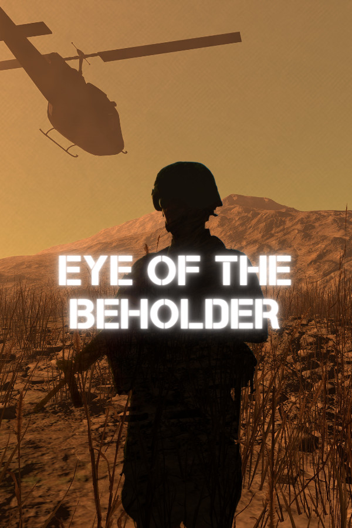

Eye of the Beholder
Eye of the Beholder
Details
|  | |
| Playtime | Not Played |
| Last Activity | Never |
| Added | 12/27/2020 17:00:17 |
| Modified | 12/2/2021 13:46:39 |
| Completion Status | Not Played |
| Library | Gog |
| Source | GOG |
| Platform | PC (Windows) |
| Release Date | 12/31/1991 |
| Community Score | 82 |
| Critic Score | |
| User Score | |
| Genre | Role-playing (RPG) |
| Developer | Westwood Associates |
| Publisher | Capcom FCI Kixx Pony Canyon Sega Strategic Simulations US Gold Ltd |
| Feature | Single Player |
| Links | Wikipedia GOG Youtube Wikia |
| Tag | |
Description
Step into war-torn enemy territory in this immersive VR game experience based on the Oscar-shortlisted documentary MY ENEMY, MY BROTHER (2015). EYE OF THE BEHOLDER is a 20 beta minute experience that subverts the war-game genre as players must choose to combat or collaborate with others.
As a documentarian I am inspired by real life situations and stories and in 2014, I was lucky enough to meet two men whose story changed my life and that of many others. Zahed and Najah are former enemy soldiers who have become blood brothers for life. Zahed was an Iranian child soldier during the Iran-Iraq War when he found Najah, an enemy soldier, injured in a bunker. Zahed made a split-second decision in the heat of the battlefield and instead of shooting Najah, he risked his own life to save him. I was deeply inspired by Zahed's ability to recognize the humanity in his enemy. His act of bravery has had lasting ramifications in both their lives and those of their families.
I documented their story in a film, MY ENEMY, MY BROTHER, which resonated strongly with audiences across the world. It landed on the Oscar shortlist, was nominated for an Emmy award, and premiered as a NYTimes OpDoc in 2015. The film evolved into a feature documentary, which premiered at Hot Docs Documentary Film Festival in 2017. The strong international response to the films, as well as feedback in the Q and A sessions, led us to explore the film’s core themes further. We wanted to bring the remarkable empathy that Najah and Zahed felt for one another into a unique space, where audiences would be able to step into their shoes and make choices for themselves, that could make them rethink their decisions in real life. We developed what is now the EYE OF THE BEHOLDER VR immersive experience.
The EYE OF THE BEHOLDER VR subverts the war-game genre to explore how we judge one another as friend or foe. EYE OF THE BEHOLDER is set in a conflict zone, but in essence each decision reflects the kind of snap judgement made in school yards, street corners and board rooms across the globe. Do I trust this person? Are they friendly or a threat? Should I collaborate with this person or fight them?
As the player faces each challenge in the bunker and decides whether or not to collaborate with the other soldiers, their decisions affect how the other soldier responds to them, and ultimately determines who makes it out alive. As the player discovers in the end, their decisions also impact the welfare of nearby communities.
As a documentarian I am inspired by real life situations and stories and in 2014, I was lucky enough to meet two men whose story changed my life and that of many others. Zahed and Najah are former enemy soldiers who have become blood brothers for life. Zahed was an Iranian child soldier during the Iran-Iraq War when he found Najah, an enemy soldier, injured in a bunker. Zahed made a split-second decision in the heat of the battlefield and instead of shooting Najah, he risked his own life to save him. I was deeply inspired by Zahed's ability to recognize the humanity in his enemy. His act of bravery has had lasting ramifications in both their lives and those of their families.
I documented their story in a film, MY ENEMY, MY BROTHER, which resonated strongly with audiences across the world. It landed on the Oscar shortlist, was nominated for an Emmy award, and premiered as a NYTimes OpDoc in 2015. The film evolved into a feature documentary, which premiered at Hot Docs Documentary Film Festival in 2017. The strong international response to the films, as well as feedback in the Q and A sessions, led us to explore the film’s core themes further. We wanted to bring the remarkable empathy that Najah and Zahed felt for one another into a unique space, where audiences would be able to step into their shoes and make choices for themselves, that could make them rethink their decisions in real life. We developed what is now the EYE OF THE BEHOLDER VR immersive experience.
The EYE OF THE BEHOLDER VR subverts the war-game genre to explore how we judge one another as friend or foe. EYE OF THE BEHOLDER is set in a conflict zone, but in essence each decision reflects the kind of snap judgement made in school yards, street corners and board rooms across the globe. Do I trust this person? Are they friendly or a threat? Should I collaborate with this person or fight them?
As the player faces each challenge in the bunker and decides whether or not to collaborate with the other soldiers, their decisions affect how the other soldier responds to them, and ultimately determines who makes it out alive. As the player discovers in the end, their decisions also impact the welfare of nearby communities.